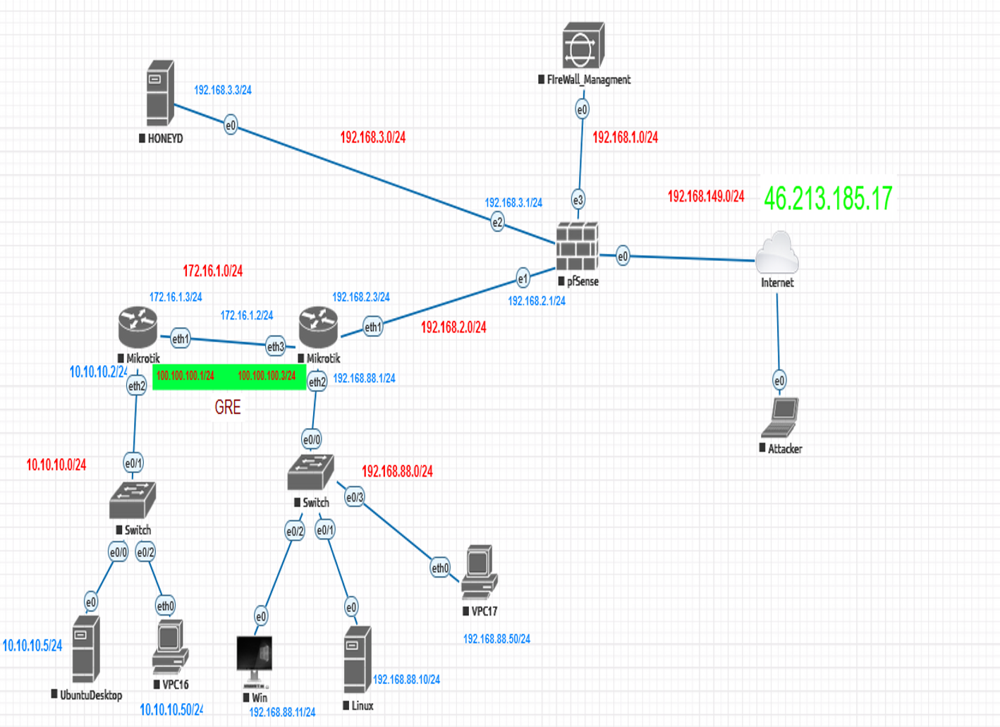

Ahmad AlAbdallah
Electronics and Communication Engineer IT & Cybersecurity Specialist
Dedicated to enhancing enterprise security postures, optimizing telecommunications infrastructure, and driving system efficiency through robust technical solutions.
View My Expertise Get In TouchAbout Me
Hello! I'm Ahmad AlAbdallah, an Electronics and Communication Engineer and IT & Cybersecurity Specialist with extensive experience in network maintenance, VoIP infrastructure, and cybersecurity defenses.
I am eager to tackle challenging projects, optimize enterprise systems, and continuously expand my technical expertise in telecommunications and IT infrastructure.
Nationality
Syrian
Current Location
Damascus, Syria
Occupational Field
Electronics & Communication Engineer / IT & Cybersecurity Specialist
Telephone
+963 9564 840 64
Languages
Arabic
Mother Tongue
English
Fluent / B2-C1 Technical Proficiency
German
B1
Core Areas
Work Experience
Remote Communication Engineer
DVCOM Technology (Remote / UAE & Kuwait)
09/2025 – 04/2026
- Tier-2/3 Technical Support & Network Maintenance: Maintained and optimized Yeastar SIP phone systems across client offices in the UAE and Kuwait.
- Voice Infrastructure Deployment: Provisioned SIP lines and Yeastar IP-PBX systems for major corporate and travel locations, including the FlyNas office in Damascus.
- SIP & VoIP Troubleshooting: Diagnosed and resolved intricate SIP trunking issues, NAT traversal obstacles, and voice quality degradation across multi-site environments.
IT Specialist
MoonJet Flight Support (Damascus, Freezone)
2022 – Present
- Cybersecurity Defenses: Configured Next-Generation Firewalls (NGFW), IDS/IPS, and data security frameworks to protect critical IT infrastructure.
- Network Security & Segmentation: Designed and segmented network architecture utilizing secure VLANs to segregate flight operations traffic.
- Incident Response & Crisis Management: Executed rapid incident response protocols during system threats and outages to maintain continuous live flight operations.
- Virtualization Management: Hardened, configured, and maintained virtualized environments using VMware vSphere.
- Enterprise ERP & Telecom: Customized ERP software and administered FreePBX, VoIP, and SIP protocols for uninterrupted communications.
IT Project Manager
Stemosis for Scientific Research (Damascus & Remote)
04/2022 – 10/2022
- Data Security & Compliance: Directed privacy frameworks and data protection initiatives in strict alignment with LGPD standards.
- Secure FTP Servers: Implemented encrypted FTP server solutions to securely deliver conference research presentations (e.g., Sheraton Hotel).
- Technical Skills Tracking: Designed and implemented a tracking platform to identify, map, and leverage technical expertise across the volunteer pool.
Graduation Project

شكل (1-1): مخطط البنية التحتية الافتراضية المطبقة عبر بيئة EVE-ng
تطبيقات الأمن السيبراني في الشبكات: استكشاف الثغرات وتعزيز الدفاع
جامعة دمشق - كلية الهندسة الميكانيكية والكهربائية | قسم هندسة الإلكترون والاتصالات
نظرة عامة عن المشروع والهدف الأساسي
في ظل التطور المتسارع للهجمات السيبرانية وظهور ثغرات اليوم الصفر (Zero-Day Attacks) التي تستهدف الأنظمة قبل اكتشافها، أصبحت وسائل الدفاع التقليدية عاجزة عن توفير الحماية الشاملة للشبكات المؤسسية الحساسة. يقدم هذا المشروع حلاً أمنياً متكاملاً يعتمد على الاستجابة الديناميكية والتحويل الخادع لمسار الهجوم (Deception Technology)، مما يوفر طبقة دفاعية استباقية تحمي الأصول الحقيقية وتصون سرية البيانات.
محاكاة بيئة العمل المتقدمة
بناء وتصميم بنية تحتية شبكية افتراضية متكاملة تقاكي شبكات الأنظمة البنكية والمؤسسات المتقدمة باستخدام بيئة EVE-ng وVMware Workstation.
مصائد الاختراق (Honeypot)
نشر أداة Honeyd لإنشاء مضيفين افتراضيين بخدمات وأنظمة تشغيل مقلّدة للتمويه واستدراج المخترق بعيداً عن أجهزة الإنتاج الحقيقية.
الأنفاق المشفرة (GRE Tunnel)
ربط الشبكات والموجهات عبر نفق GRE مشفر لتمرير حركة البيانات الحساسة بشكل آمن وعزل الشبكة الداخلية عن الوصول المباشر للإنترنت.
أنظمة الجدار الناري وكشف التسلل
تكامل جدار الحماية pfSense مع محرك Snort IDS للتحليل المستمر للبيانات، كشف الأنشطة المشبوهة، وإرسال الإنذارات الفورية.
سيناريو العمل واختبارات الاختراق العملي
تم تنفيذ اختبار اختراق واقعي لمحاكاة ثغرات معقدة عبر شن هجوم على بروتوكول الشجرة الممتدة (STP Attack / Spanning Tree Protocol) باستخدام أدوات متقدمة مثل Yersinia عبر توزيعة Kali Linux، للتأثير على انتخاب الجسر الجذر (Root Bridge) وتغيير مسارات التوجيه في الطبقة الثانية.
أثبتت النتائج نجاح آلية الدفاع المقترحة؛ حيث جرى التعرف على السلوك الانحرافي فوراً، وتم تحويل حركة مرور المهاجم بسلاسة نحو مصيدة الاختراق عبر نفق GRE المخصص، مما أتاح الوقت الكافي لفريق الحماية لتتبع المهاجم، تحليل البصمة التعريفية للهجوم، وتأمين البنية التحتية دون حدوث أي انقطاع في الخدمات التشغيلية.
Cybersecurity Applications in Networks: Vulnerability Assessment & Defense Enhancement
Damascus University - Faculty of Mechanical & Electrical Engineering | Dept. of Electronics & Communications Engineering
Executive Project Overview
Modern corporate networks face sophisticated threats, particularly Zero-Day exploits that bypass traditional signature-based defenses. This graduation project designs and deploys a proactive, deception-based cybersecurity architecture engineered to defend critical infrastructures by isolating core assets and neutralizing intrusions in real time.
Enterprise Virtual Environment
Designed a complex multi-tier network topology simulating high-security financial infrastructures using EVE-ng hosted on VMware Workstation.
Honeypot Deception (Honeyd)
Implemented Honeyd to spawn low-interaction decoy hosts running simulated OS topologies, effectively misdirecting malicious traffic away from production servers.
Encrypted GRE Tunneling
Configured point-to-point GRE tunnels across MikroTik virtual routers to encapsulate and encrypt data streams, preventing direct internet exposure.
pfSense Firewall & Snort IDS
Integrated pfSense enterprise firewall with Snort Intrusion Detection System for deep packet inspection, signature monitoring, and automated threat alert generation.
Practical Exploitation & Mitigation Methodology
To validate defense effectiveness against zero-day dynamics, an advanced Layer 2 exploit was executed targeting the Spanning Tree Protocol (STP Attack) using Yersinia on Kali Linux to compromise Root Bridge election and destabilize switching paths.
The deployed framework successfully detected the anomaly, seamlessly rerouting adversary traffic into the isolated honeypot environment via the GRE tunnel. This provided vital response time to collect attacker telemetry, analyze payload traits, and fortify security boundaries with zero disruption to real production systems.
Education
Bachelor's Degree in Electronics and Communication Engineering
Damascus University, Syria
2019 – 2025
Skills & Certifications
Certifications & Credentials
IT Infrastructure & Telecommunications
Programming & Tools
Organisational & Social Skills
Get In Touch
I'm always open to discuss new projects, creative ideas, or opportunities to be part of your vision. Feel free to reach me out.
References
- Management & Engineering Team - DVCOM Technology.
- IT Manager, MoonJet Flight Support.
- Dr. Nafiza Martini - CEO, Stemosis for Scientific Research.